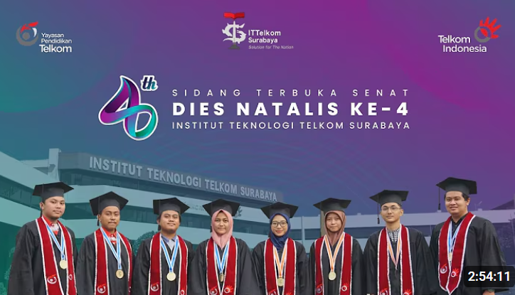

Dua Wisudawan Sistem Informasi Berhasil Meraih Predikat Cumlaude
Institut Teknologi Telkom Surabaya telah menggelar prosesi wisuda ke-1 secara luring di hotel Grand Dafam, Surabaya pada Sabtu (26/03/2022) kemarin. Prosesi wisuda ini merupakan yang pertama dilakukan sejak kampus ini berdiri di tahun 2018 lalu. Pada wisuda pertama ini, 16 wisudawan telah dinyatakan lulus secara sah oleh Rektor ITTelkom Surabaya Bapak Dr. Tri Arief Sardjono, S.T., M.T.
Seluruh wisudawan merupakan mahasiswa yang berhasil lulus dengan masa studi 3,5 tahun. Dua diantaranya merupakan mahasiswa program studi Sistem Informasi. Mereka adalah Amalina Tri Setya Berliana dan Irene Dyah Ayuwati. Keduanya berhasil menyandang gelar S.Kom dengan predikat cumlaude. Wisudawan dengan IPK tertinggi adalah Amalina Tri Setya Berliana yang tidak lain merupakan mahasiswa program studi Sistem Informasi dengan IPK 3,96.
Pada prosesi wisuda ini pula, Rektor ITTelkom Surabaya telah menyampaikan pesannya dengan penuh sukacita. Beliau berpesan bagi seluruh wisudawan agar terus mengembangkan diri sehingga dapat mengambil peran di era transformasi digital yang disruptif ini. Acara wisuda ini dapat disaksikan melalui kanal youtube ITTelkom Surabaya https://youtu.be/k1-Erdksi6o.
